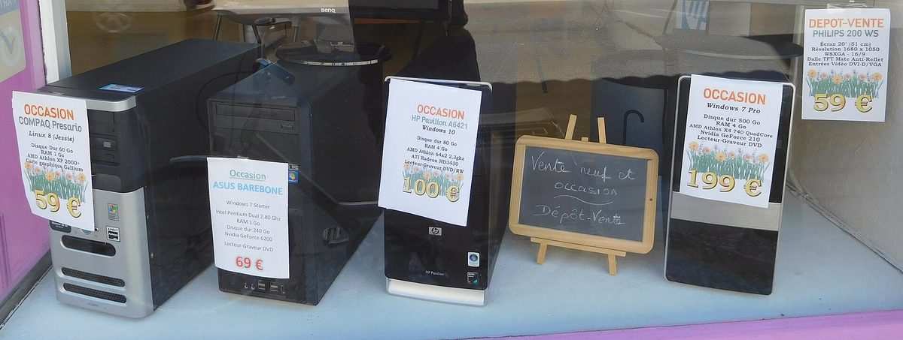

¡Prepara tu compra de PC de segunda mano con este checklist!
Aprende a evaluar tu futura compra de PC de segunda mano con nuestra guía paso a paso, evitando errores y ahorrando dinero.

Lo esencial en 30 segundos
- Realiza pruebas de arranque y diagnóstico para verificar el estado del PC.
- Asegúrate de que los componentes sean compatibles y actualizados.
- Consulta con un profesional en la reparación de PC si tienes dudas sobre la compatibilidad o el estado del PC.
En este artículo
Preparación del equipo para la compra
Antes de adquirir un PC de segunda mano, es crucial evaluar su estado y funcionalidad. Si tienes acceso a un amigo o familiar que pueda dejarte un monitor y un teclado, es un gran plus. Esto te permitirá realizar una prueba de arranque y verificar si el equipo funciona correctamente. Además, prepara un USB con herramientas de diagnóstico como MemTest86+ o CrystalDiskInfo.
En caso de no contar con estos recursos, considera visitar un amigo con PC o acudir a una tienda especializada en reparación de hardware. Esto te permitirá obtener una opinión objetiva sobre el estado del equipo.

Inspección física del ordenador
El primer paso al inspeccionar un PC de segunda mano es examinar la limpieza y el estado general de su exterior. Un ordenador con restos de polvo o suciedad puede indicar que ha estado en malas condiciones. Verifica si el equipo presenta marcas de golpes, arañazos o cualquier otro daño visible. Si tienes dudas, busca profesionales en la reparación de PC que puedan revisarlo.
Además, revisa la distribución interna: la placa base y los cables deben dejar espacio para que el aire circule. Si todo está muy apretado o hay componentes mal colocados, la ventilación puede verse afectada.
“El primer paso al inspeccionar un PC de segunda mano es examinar la limpieza y el estado general de su exterior.”
Pruebas de arranque y diagnóstico
Una vez que hayas inspeccionado el equipo visualmente, es hora de ponerlo a prueba. Enciende el PC y ve a través del proceso de arranque. Presta atención a cualquier mensaje de error que puedas ver en la pantalla. Estos mensajes pueden indicarte si hay problemas con el hardware o el software. Si el ordenador arranca pero no funciona correctamente, podría ser un signo de problemas más profundos.
Utiliza herramientas de diagnóstico como el MemTest86+ para verificar la integridad de la memoria RAM. Si este software no carga correctamente o muestra errores, hay posibilidades de que el PC tenga problemas de hardware. También puedes usar el SFC (System File Checker) de Windows para verificar si los archivos del sistema operativo están corrompidos.

Verificación de la configuración y compatibilidad
Una vez que hayas comprobado que el PC arranca sin problemas, es el momento de revisar su configuración y compatibilidad. Verifica si los componentes principales como la CPU, la placa base y la memoria RAM son compatibles entre sí. Si no lo sabes, busca un manual de tu PC o consulta con un profesional en la reparación de PC. Esto te ayudará a asegurarte de que los componentes estén correctamente configurados y no causen problemas de incompatibilidad.
Además, asegúrate de que la configuración del BIOS esté correcta. Verifica si los periféricos como el ratón y el teclado funcionan correctamente. Si hay problemas, revisa las configuraciones de la BIOS o considera la posibilidad de que el PC tenga un problema de hardware o software que necesite ser solucionado.
Errores comunes y cuándo pedir ayuda
Es normal cometer errores al comprar un PC de segunda mano. Uno de los errores más comunes es adquirir un equipo con componentes obsoletos que no serán útiles en el futuro. Antes de comprar, asegúrate de que los componentes sean actualizados y compatibles con tus necesidades. Si no estás seguro de cómo evaluar la compatibilidad de los componentes, considera pedir ayuda a un profesional en la reparación de PC o a un amigo que sepa de hardware.
Otro error común es adquirir un PC que tenga problemas ocultos. Si notas que el PC arranca con problemas o no funciona correctamente, es posible que el equipo tenga problemas que necesiten ser solucionados. En este caso, es mejor pedir ayuda a un profesional en la reparación de PC para garantizar que el equipo esté en perfectas condiciones antes de realizar la compra.

Consejos prácticos
- 1 Realiza pruebas de arranque y diagnóstico para verificar el estado del PC.
- 2 Asegúrate de que los componentes sean compatibles y actualizados.
- 3 Consulta con un profesional en la reparación de PC si tienes dudas sobre la compatibilidad o el estado del PC.
- 4 No adquieras un PC con problemas ocultos, ya que esto puede causar futuros problemas de funcionamiento.
Para terminar
Si tienes dudas sobre el estado de tu nuevo PC o necesitas ayuda para comprobarlo, no dudes en ponerte en contacto con TecnoLobato a través de WhatsApp. Nuestro equipo de profesionales estará encantado de ayudarte y garantizar que tu compra sea segura y satisfactoria.
¿Quieres que lo revisemos contigo?
Escríbenos por WhatsApp y te orientamos sobre tu equipo sin compromiso.